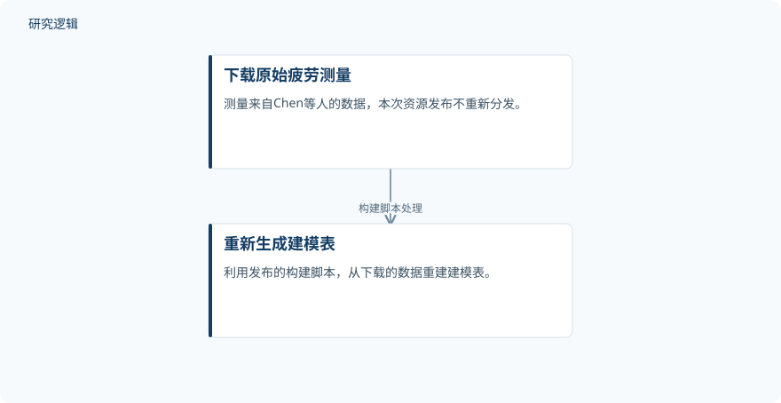

摘要解读
多轴疲劳寿命机器学习预测的经审计留一材料基准：代码、预测与不确定性区间
Audited leave-one-material-out benchmark of machine-learning models for multiaxial fatigue life prediction: code, predictions and uncertainty intervals
解读更新 2026-10-17 10:23 · 依据公开摘要整理，未核验全文细节
面向未测试合金的多轴疲劳寿命预测，模型评估如何做到可追溯、可复核？这份基准配套资源公开数据审计信息、逐试验预测与不确定性区间，阅读价值在于理解评估依据，而非直接获取模型优劣结论。
文章目录
未测试合金预测，需要怎样的评估依据？
本次摘要介绍的是一份支撑研究稿件的代码与结果资源发布，而不是完整的研究结果摘要。其对应主题是利用机器学习预测未测试合金的多轴疲劳寿命，并以留一材料法（LOMO）构建评估基准。
资源同时提供各模型的LOMO与随机划分逐试验预测。这为进一步核对不同划分方式下的表现提供了材料，但摘要并未报告两者的性能差异，不能据此认定某种模型已经具备更强的跨材料预测能力。
从原始测量重建建模表，并核对数据版本
底层疲劳测量来自Chen等人的数据，本次发布不重新分发这些测量。摘要说明，提供的构建脚本能够从下载的原始数据重新生成建模表；同时，校验清单列出全部1170个源文件的SHA-256，供使用者确认数据版本一致。这里的文件数不能视为独立试验样本数。
依据摘要整理的数据重建关系


仅展示摘要明确说明的原始数据与建模表之间的关系，不是论文原图，也不代表完整分析流程。
下载 SVG图示关系说明
实线表示相邻阶段的信息流，虚线表示跨阶段联系或反馈。
下载原始疲劳测量 → 重新生成建模表：构建脚本处理
已公开审计发现，但未给出模型胜负
摘要明确报告，审计后的映射将40个名义合金牌号对应到41个材料—条件域，并识别出12条物理上不一致的记录。这提示阅读时应区分合金牌号与材料—条件域，不能将二者直接等同。
发布内容还包括完整分析流程、逐试验预测、不确定性区间、各域的保形覆盖率、各随机种子的得分及网络超参数。公开了覆盖率，不等于已经证明覆盖充分：摘要没有给出覆盖率数值、预测误差或模型排名。
哪些预测与验证结论仍无法判断？
仅凭摘要，无法判断独立试验总数、各域样本分布、模型具体构成、训练与调参细节，以及物理不一致记录的判定标准和处理方式。也无法确认不确定性区间的具体构造与校准设置，或是否开展了外部验证；这些属于当前资料未交代的信息，而不是论文没有开展相关工作的证据。
阅读启发：先核对评估口径，再讨论可靠性
阅读启发：面向结构疲劳与可靠性应用，可优先追问材料—条件域如何定义、LOMO与随机划分的预测表现是否一致，以及各域覆盖率是否存在差异。这份资源为继续核对这些问题提供了入口，但当前摘要不足以支持工程可靠性提升或实际部署有效性的结论。
以上为本站阅读启发与建议，不是论文已验证的结论。